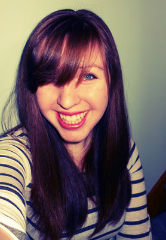

 Hello! My name is Ally and you may be wondering who I am and why I am on this website. Well, I'm Trevan's super supportive girlfriend and while I was helping him design his website, I decided that I'd like my own page too, like a miniwebsite :). Currently I'm a student at Indiana University School of Optometry getting my Doctor of Optometry (O.D.) degree. I graduated from IUB in 2015 with a B.S. in Neuroscience. Hopefully I can share the neat facts that I learn from class on my blog. I also hope to eventually learn more about HTML and CSS to make this website both asthetically pleasing and functional.